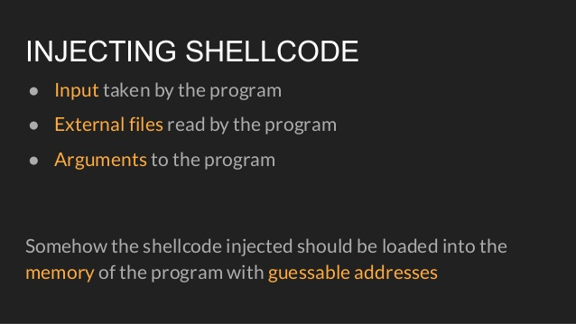
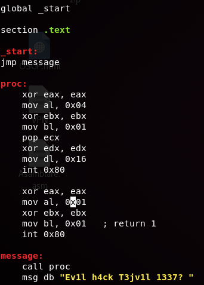
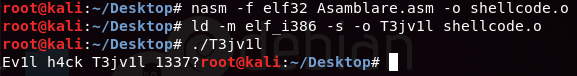
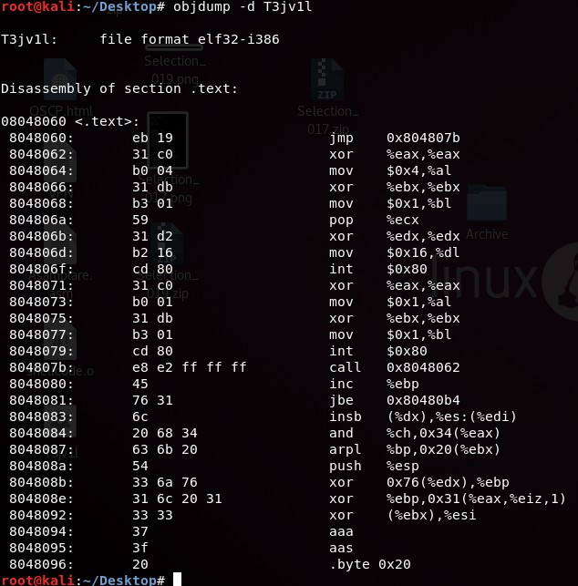
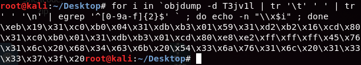
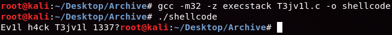
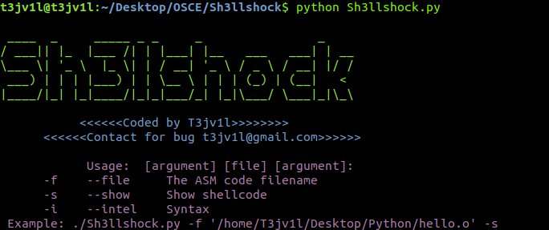
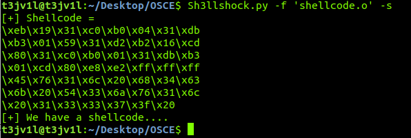

Hello everyone. Today we will talk about shellcode, what is it and how we can do one
What is Shellcode?
In hacking, a shellcode is a small piece of code used as the payload in the exploitation of a software vulnerability. It is called "shellcode" because it typically starts a command shell from which the attacker can control the compromised machine, but any piece of code that performs a similar task can be called shellcode. Because the function of a payload is not limited to merely spawning a shell, some have suggested that the name shellcode is insufficient. However, attempts at replacing the term have not gained wide acceptance. Shellcode is commonly written in machine code.
Shellcode is commonly written in machine code.What do you need to know before I begin?
You need to understand of x86/x64 assembly, C, and knowledge of the Linux and Windows operating systems.
General Purpose Registers on the x64 platform:
rax , rbx , rcx , rdx , rsi , rdi , rbp , rsp , r8 , r9 , r10 ,r11 , r12 , r13 , r14 , r15
General Purpose Registers on the x32 platform:
eax , ebx , ecx , edx , esi , edi , ebp , esp , r8d , r9d , r10d ,r11d , r12d , r13d , r14d , r15d
Access the upper 16-bits of the GPRs.
ax , bx , cx , dx , si , di , bp , sp , r8w , r9w , r10w ,r11w , r12w , r13w , r14w , r15w
Access the lower 8-bits of the GPRs.
al , bl , cl , dl , sil , dil , bpl , spl ,r8b , r9b , r10b ,r11b , r12b , r13b , r14b , r15b
ESI and EDI are used when making Linux syscalls
XOR EAX, EAX is a great way to zero out a register (while staying away from the nefarious NULL byte!)
In Windows, all function arguments are passed on the stack according to their calling convention.
For more information about syscall you have here link : (syscalls)
Ok let's try to make a exemple
First we will make a small program in the assembly programming language, which will display: "Ev1l T3jv1l h4ck 1337?"
You probably are using an operating system with randomized stack and address space and possibly a protection mechanism that prevents you from executing code on the stack. All Linux based operating systems are not the same, so I present a solution for Ubuntu that should adapt easily.
echo 0 > /proc/sys/kernel/exec-shield ((turn it off))
echo 0 > /proc/sys/kernel/randomize_va_space (((turn it off)))
echo 1 > /proc/sys/kernel/exec-shield {{{turn it on}}}
echo 1 > /proc/sys/kernel/randomize_va_space [[[turn it on]]]
First time we need "touch command" to create a file with extension .asm than we use nano editor to write code. This exemple is for 32 bit !! You need install:
sudo apt-get install lib32z1 lib32ncurses5

This time we need to compile this Code with next command :
root@kali:~/Desktop# nasm -f elf32 Asamblare.asm -o shellcode.o
root@kali:~/Desktop# ld -m elf_i386 -s -o T3jv1l shellcode.o
root@kali:~/Desktop# ./T3jv1l

Now we try to see shellcode with objdump
root@kali:~/Desktop# objdump -d T3jv1l

And now after seeing the shellcode we'll try to extract it with the next command: for i in `objdump -d T3jv1l | tr '\t' ' ' | tr ' ' '\n' | egrep '^[0-9a-f]{2}$' ` ; do echo -n "\\x$i" ; done

Ok now let's see if this shellcode will run, we will create a small program in the programming language C
The program will look like this:
#include <"stdio.h">
char shellcode[] ="\xeb\x19\x31\xc0\xb0\x04\x31\xdb\xb3\x01\x59\x31\xd2\xb2\x16\xcd\x80\x31\xc0\xb0\x01\x31\xdb\xb3\x01\xcd\x80\xe8\xe2\xff\xff\xff\x45\x76\x31\x6c\x20\x68\x34\x63\x6b\x20\x54\x33\x6a\x76\x31\x6c\x20\x31\x33\x33\x37\x3f\x20";
int main(int argc, char **argv) {
int *ret;
ret = (int *)&ret + 2;
(*ret) = (int)shellcode;
}
Okay, we know that char shellcode [] stores all the opcodes in hexadecimal format for our shellcode. Then, in order to execute this shellcode, the main function does some sort of trick. After compiling the program as an ELF32 binary with the -z execstack flag set, if we run it we get our shell
First, it defines a variable of type int *, that is, a pointer of type int, inside the main() function. This variable will be located inside main’s stack frame, right after the saved ebp register.
Because our ret variable is located precisely after the saved ebp register, before this saved ebp register will be located the saved return address that has been stored before calling the main() function.
So, apparently, we can use our ret pointer to point to the saved return address mentioned and overwrite it with the address of our shellcode.
Now let's compile the program in C and see if it works!!!

BONUS!!!
I made my own tool in python for extract shellcode , you will find at : https://github.com/T3jv1l/Sh3llshock


If you look, you will see that it is the same shellcode as the one used above, just as much easier to extract with this tool
Maybe this is not the best example of Shellcode, but maybe it will help you a little bit to see how one is created and how it can be run, Thank you for your time! (Sorry for my english , i am not a native speaker)
References!!
http://www.vividmachines.com/shellcode/shellcode.html
https://en.wikipedia.org/wiki/Shellcode
Hacking-Art-Exploitation-Jon-Erickson
https://www.exploit-db.com/building-your-own-ud-shellcodes-part-1.pdf